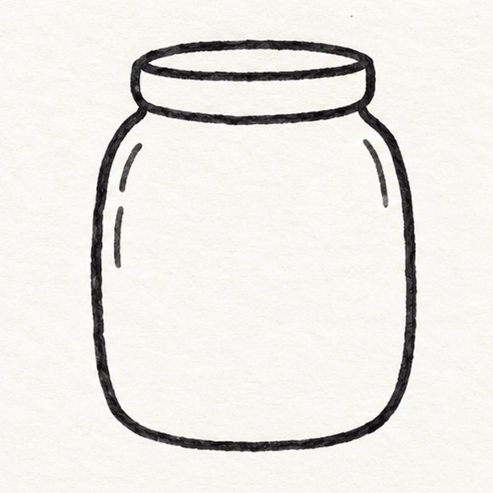
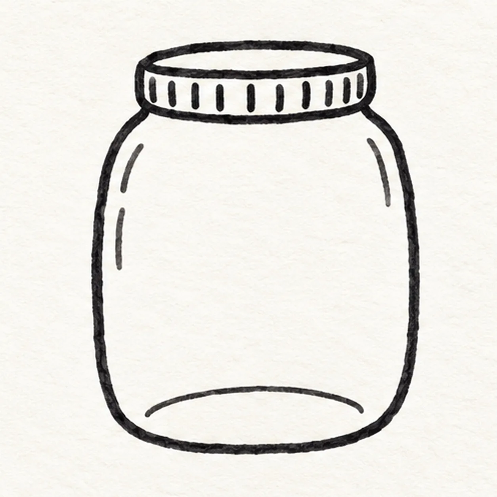
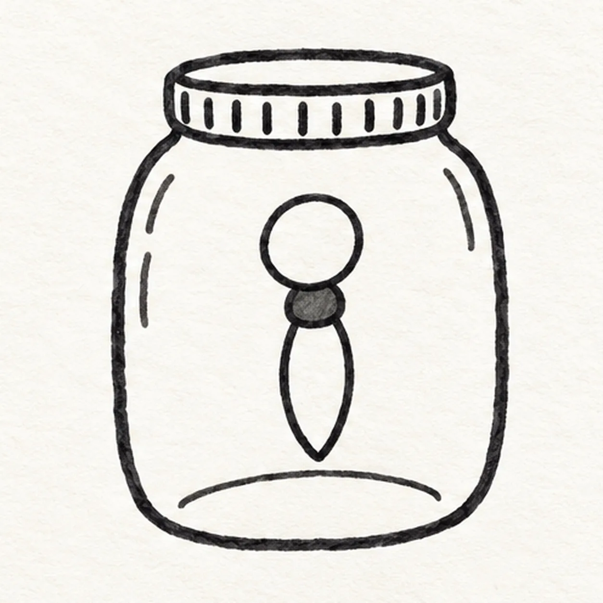
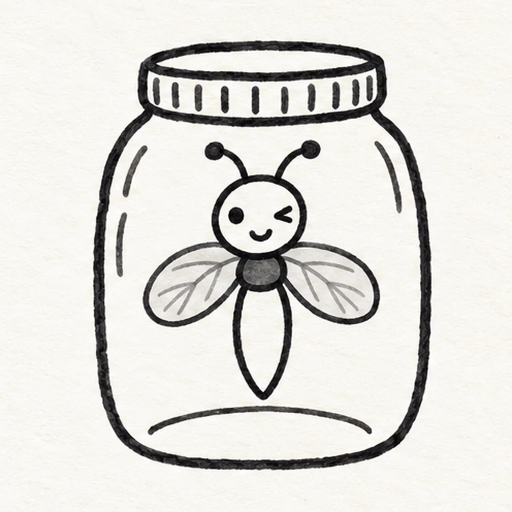
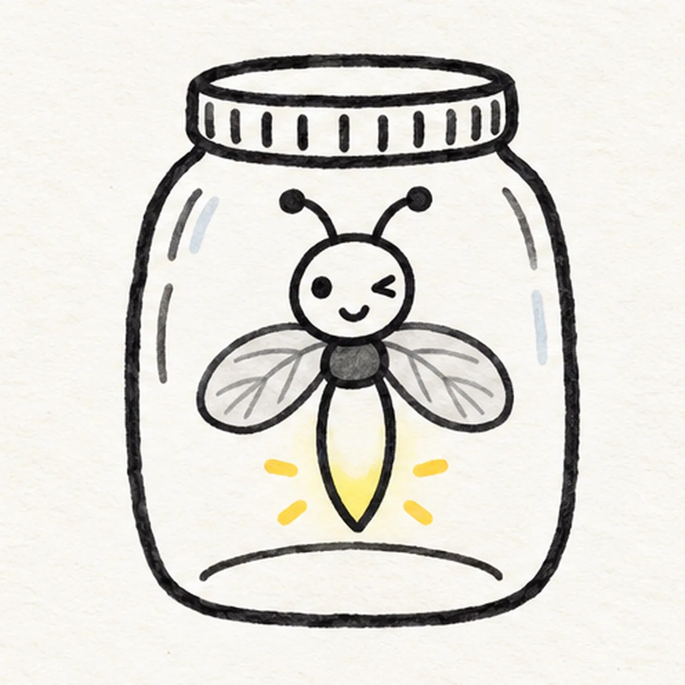

Marker ready?
Let's draw a firefly in a jar
Treat this as one playful practice round: sketch the idea loosely, simplify the shapes, then commit with confident marker outlines and bright fills.
-
01

Shape the glass jar
Draw a wide oval mouth and one plain narrow rim band. Drop two jar sides from its shoulders, round the lower corners, and join them with a flat bottom. Place two short gray shine strokes inside each side.
Marker tip: Keep the rim wider than the jar body center, and leave enough white paper inside for the bug.
-
02

Mark rim and base
Draw short vertical rib marks across the existing rim band. Echo the flat bottom with one shallow inner curve just above it, keeping the jar and four side accents in place.
Marker tip: Space the lid ticks loosely; the inner base curve sits above the outer bottom.
-
03

Place the firefly
Place a small blank round head near the jar upper middle. Attach a short gray thorax beneath it, then a long unstriped abdomen tapering to a point; leave the head empty for the next step.
Marker tip: Keep the head blank now so its expression appears at the same time as its wings.
-
04

Give it wings and a face
From each thorax shoulder, curve an oval wing outward and add light gray vein strokes inside each. Attach two antennae to the head, then draw a left dot eye, right wink, and small smile.
Marker tip: Root both wings at the gray thorax and aim their long tips toward the jar sides.
-
05

Show the tail glow
Place two short yellow glow dashes on each side of the tail tip and tint the established tip pale yellow. Beside the existing gray jar accents, add one pale blue gleam on each side.
Marker tip: Count two dashes on each side of the tail; keep the yellow mostly inside the existing contour.
-
06

Color the glowing firefly
Fill the established rim coral, head teal, wings pale blue, and tapered abdomen yellow to orange toward its tip. Deepen the same four glow dashes to orange; keep the jar mostly white and the four gray accents and two pale blue gleams visible.
Marker tip: Use visible marker strokes in the tail instead of a perfectly smooth digital gradient.